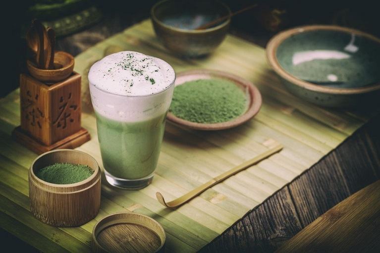

Зачем это нужно?
Поможет Вам улучшить состояние кожи, укрепить иммунитет и увеличить работоспособность! Этот чай, который так похож на кофе, помогает печени очищаться и активировать натуральный обмен веществ во всем организме. Матча содержит в 10 раз больше антиоксидантов, чем обычный зеленый чай. Энергии молодости становится в 10 раз больше! Подробнее в статье!

Пищевая ценность этого напитка
| Нутриент | кКал | % от нормы в 100 кКал |
|---|---|---|
| Калорийность | 50 кКал | 6% |
| Белки | 2.6 г. | 6.8% |
| Жиры | 2.6 г. | 9.2% |
| Углеводы | 5.5 г. | 5% |
Ингредиенты
- чай матча - 0.5 ч.л.
- молоко - 100 мл.
- кипяток - 50 мл.
- сахар - 1 ч. л.
Приготовление пошагово
- наливаем кипяток в стакан;
- добавляем сахар;
- добавляем чай матча и размешиваем до полного растворения;
- нагреваем молоко;
- взбиваем молоко;
- добавляем молоко в чай.
Посмотрите видео
Закажите это чудо: